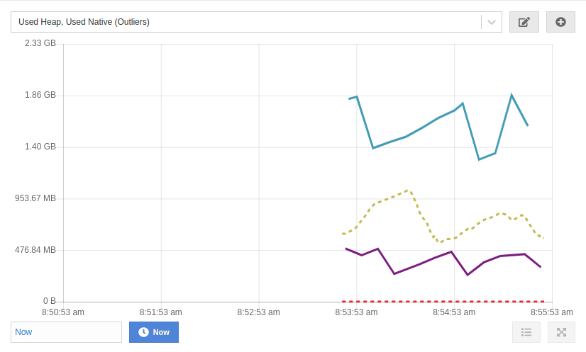
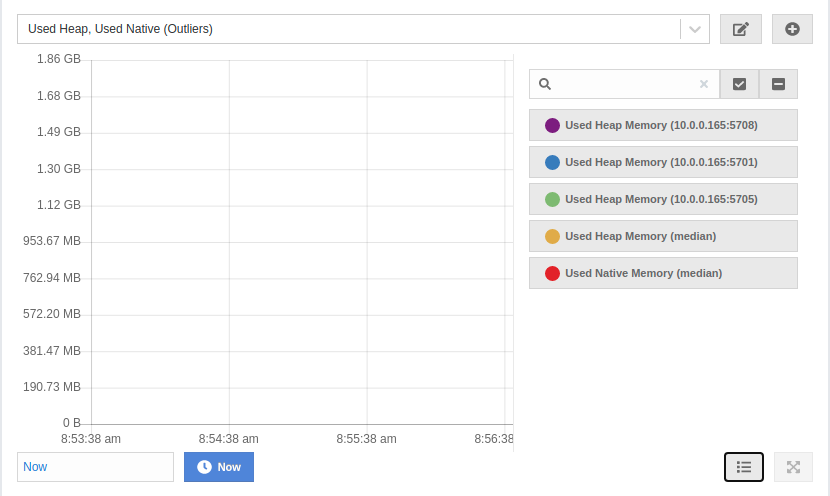
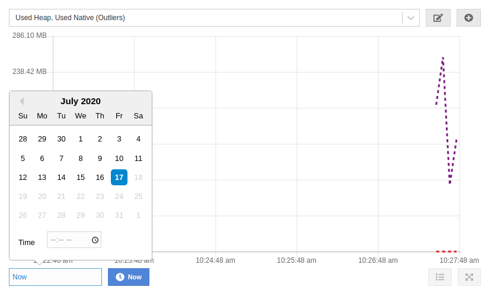

Widget
Widget is a special component designed to inspect cluster metrics as graphs. It is used on the dashboard and on the details page of any data structure (with a few exceptions).

Legend
Widget can display up to 12 graphs at the same time. Legend allows you to adjust which graphs are visible and which ones are not. By default, all graphs are visible. A title of a hidden graph is displayed as struck through.

Current and Historical Data
Widget works in two modes - current and historical. It fetches current data in the current mode and historical data in the historical mode.
The current mode is always available. The historical mode requires Metrics Persistence to be enabled.
The input on the bottom controls what data is displayed. The input is disabled if only current data is available. You can select any arbitrary point in the past to see the historical data from that period. You can drag the chart to adjust the time point.
Widget shows up to 5 minutes of data. In the current mode it requests data in chunks every 5 seconds, and concatenates it. In the historical mode it requests 5 minutes of data up to the selected time point once.

When the historical mode is activated, the bottom input displays the selected time point. You can press the "Now" button to switch back to the current mode.

Presets
Widget provides access to an extensive list of metrics and uses a selection of filters to show only relevant data matching a certain condition on the graph. A preset is a combination of metrics and a filter. You can add/edit new presets and remove the existing ones. Each widget is shipped with at least one default preset. You cannot edit or remove a default preset.
The top dropdown shows the name of the preset and allows you to switch between them. The pencil button next to it opens an edit preset view. The plus button opens a new preset view.
Metrics
Every member collects its own metrics. Management Center periodically polls the members for their metrics and stores them in a dedicated metric storage. Later on, it exposes individual member metrics and their aggregates. Aggregated metric is a single value calculated for a metric across all cluster members for a single point in time. It can be a sum of values for all cluster members for a single time point, it can be their average, mean, etc.
Here is an example of the sum aggregate (colored in red):

Every metric is measured using some unit of measurement. You can select metrics with up to two different units.
Filters
Widget supports the following types of filters:
-
Outliers (auto)
-
Peak Top 3
-
Peak Bottom 3
-
Average Top 3
-
Average Bottom 3
-
Manual Selection
Peak Top 3 and Peak Bottom 3
It works as follows:
-
Widget fetches individual member metrics for all members.
-
It finds a maximum/minimum (for Top 3 and Bottom 3 correspondingly) value in the list of data points for every member.
-
It shows top 3/bottom 3 graphs based on the maximum/minimum value.
On the image below a graph with the highest peak value is colored in red:

Average Top 3 and Average Bottom 3
It works as follows:
-
Widget fetches individual member metrics for all members.
-
It calculates an average value for the list of data points for every member.
-
It shows top 3/bottom 3 graphs based on the average value.
On the image below green and red graphs are displayed with their corresponding average values. As you can see, the red graph has a higher peak value, but a lower average value.

Outliers (auto)
It works as follows:
-
Widget fetches individual members metrics for all members.
-
It calculates an average value for the list of data points for every member.
-
Widget fetches a median aggregate for the selected metric.
-
It calculates an average value for the median aggregate graph.
-
It shows the median aggregate graph as a dashed line.
-
If the average value for any member is greater than the average value for the median aggregate, it shows the graph for that member. This graph is called an outlier. The graph shows up to 3 outliers with the greatest deviation from the median.
The below image shows 4 member graphs with their corresponding averages. A median aggregate with its average is colored in green. The member graph that is considered an outlier is colored in red.